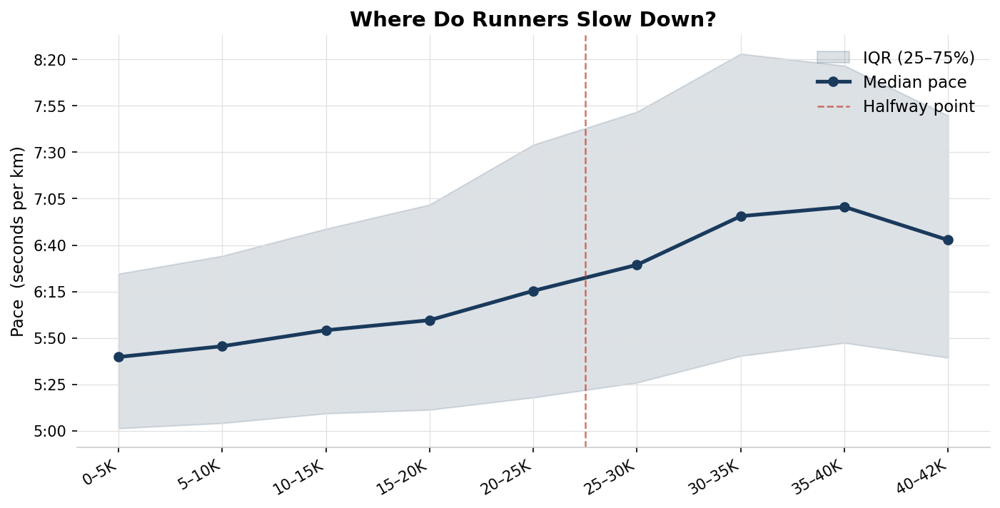
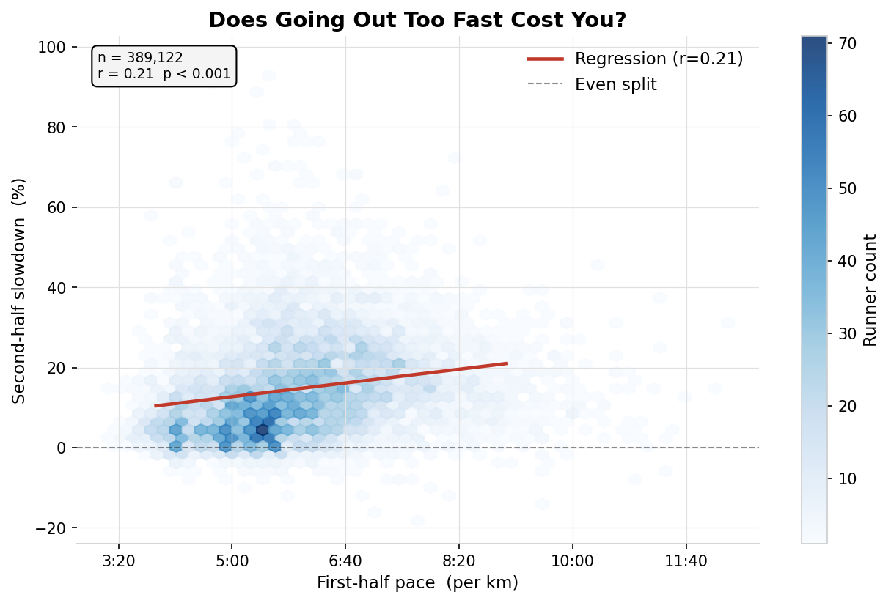
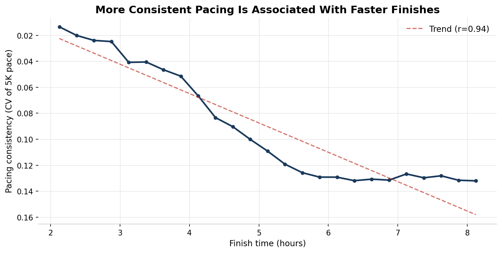
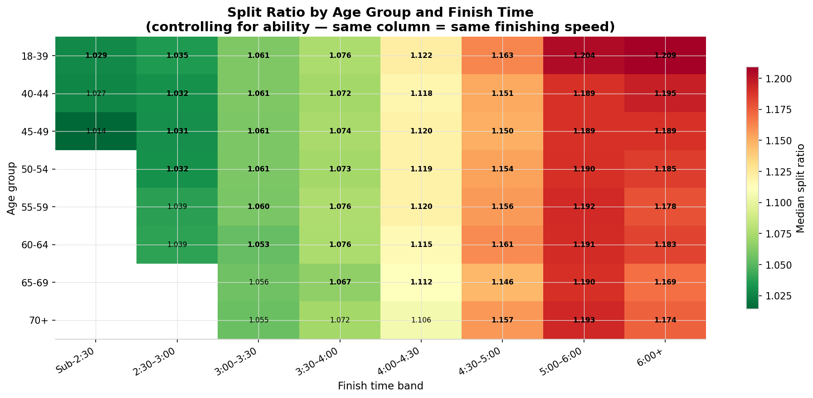

The full set of charts from the analysis. Each one is drawn directly from cleaned race results with sample sizes noted. Where the data doesn't support a claim, that is stated explicitly.
Toggle updates Charts 1 and 2. Charts showing gender comparisons directly are unaffected.
The distribution of split ratios (second-half time ÷ first-half time) is strongly right-skewed, peaking just above 1.0 with a long tail of runners who fade badly. The median is ~1.13, meaning the typical runner's second half takes 13% longer. Fewer than 6% of finishers achieve a negative split.
What this means: Even pacing is not the norm — it is a genuine achievement. Starting conservatively and holding pace is rare, not routine.
Hover any bar for exact count. Blue = negative split, red = positive split. Use the toggle above to filter by gender.
Sub-3:00 runners typically show split ratios near 1.02–1.03. Runners finishing in 5:00–6:00 hours regularly exceed 1.18–1.20. The gap is large and consistent across all 11 years.
Caution: This is an association, not a causal claim. Faster runners have greater aerobic capacity and experience. The data cannot tell us whether even pacing causes faster finishes or simply reflects underlying fitness.
Hover any bar to see median, IQR, and runner count. Use the toggle above to filter by gender.

Median pace for each 5km segment is relatively stable through 25km, then drops noticeably from 30km onward. The sharpest single-segment slowdown occurs in the 30–35km block — consistent with glycogen depletion around the 30km mark.
Note: This chart uses the subset of runners with full 5K split data collected from individual result pages.

Each runner's first-half pace plotted against their second-half slowdown percentage. A hexbin density approach is used because individual points are uninformative at this scale. The regression line shows a modest positive relationship.
Honest caveat: r ≈ 0.22 explains only ~5% of variance. Many runners who go out fast still finish strongly. First-half pace is one signal, not a deterministic predictor.
Chart 4 used raw pace — but a 5:00/km runner is not comparable to a 7:00/km runner. This controls for ability by expressing each runner's pace as a ratio to their finish-band median (1.0 = exactly at peer-group median).
The correlation strengthens to r = −0.58. Going out 10% faster than your peer group is associated with ~11 extra percentage points of second-half slowdown. This is the project's strongest quantitative finding. This is a correlation — the data cannot prove that a slower start would have produced a better finish for those specific runners.
Hover bars to highlight the corresponding zone on the regression chart above.
Median finish time and positive split rate tracked across 2014–2025 (excluding 2020 — race cancelled). Reveals how the field has shifted, particularly around the post-COVID rebuild of 2021–2022.
2018 outlier: Race day temperatures reached 24°C — exceptionally hot for April in London. The median finish time spiked ~23 minutes above the surrounding years, and 98.6% of finishers ran a positive split, the highest rate in the dataset. Elite runners were affected equally: Eliud Kipchoge won in 2:04:17, nearly two minutes slower than world record pace. The dashed orange line on the chart marks this year.
Limitation: Year-on-year comparisons are confounded by field composition — weather, qualification standards, and charity proportions differ each year and cannot be controlled for.
Hover any year to see finish time, positive split rate, and total finishers.

Using 5K segment data from 331,000 runners, pacing consistency is measured as the coefficient of variation (CV) of segment paces — lower CV means more even effort. The y-axis is inverted so better (more consistent) pacing sits higher on the chart.
The group-level correlation between consistency and finish time is r = 0.94 — the strongest relationship in the dataset. Faster finishers are dramatically more consistent in their effort across the race.
Across 232,000 male and 157,000 female finishers, women consistently show lower split ratios within the same finish band. Overall: 1.118 (women) vs 1.136 (men). A consistent gap holding across all 11 years.
Caution: This confirms the pattern — not the cause. Self-selection, training background, or strategy differences may all contribute.

This heatmap controls for ability by comparing age groups within the same finish-time band. Each cell shows the median split ratio. Greener = more even pacing; redder = more fade.
Within most finish bands, differences across age groups are small — at the same finishing speed, age has a more modest effect than the uncontrolled comparison (Chart 9) implies.
Split ratios show a modest upward trend from age 18–39 to 70+, meaning older runners actually fade slightly more in the second half on average.
Important caveat: This chart does not control for finish time. Older runners tend to finish more slowly, and slower finishers have higher split ratios regardless of age. Chart 8 shows the ability-controlled version.